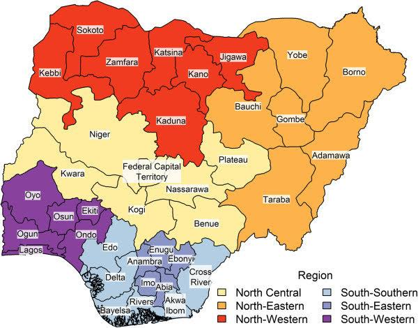

Explore interactive maps, charts, and infographics about Nigeria's political structure and representation.
Interactive Political Map
Click the link below to plot maps of any political office in Nigeria:
Nigeria Geopolitical Map & Representation

Interactive Zoomable Map by Geopolitical Zone
Click a zone to zoom and view details